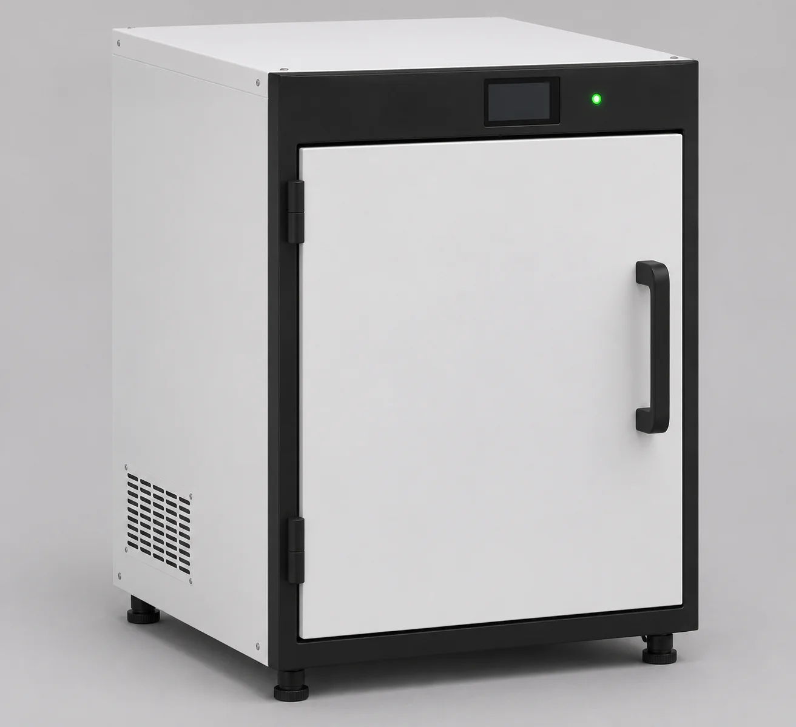
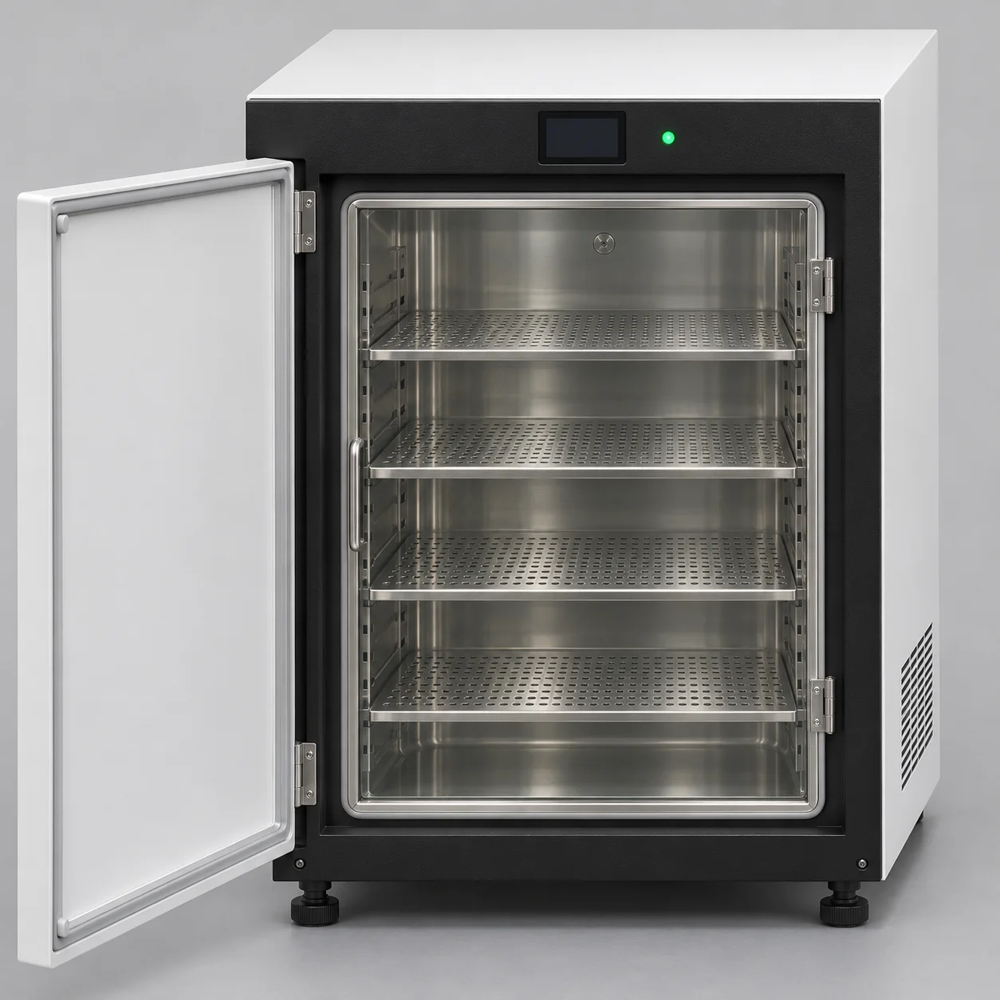
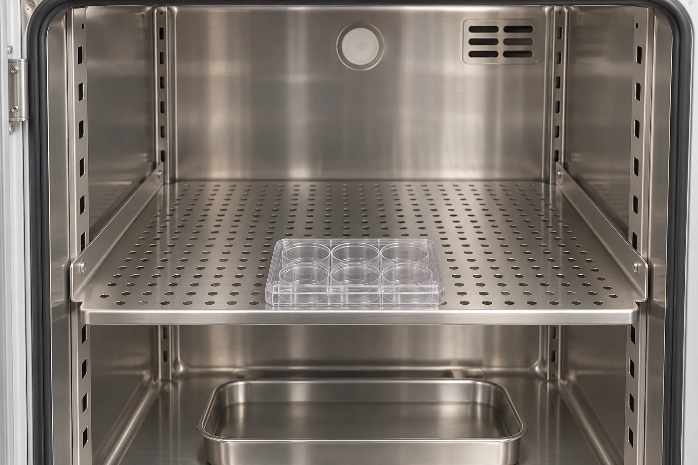
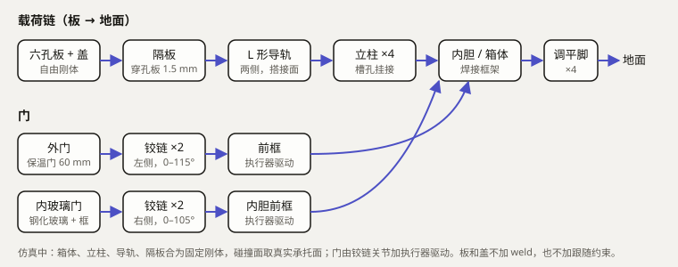

World Building · 审批点② · cell-passaging-slice-01
参考图与 plan
细胞传代薄切片 01：开培养箱取板送观察站。这一页通过之后，建模、仿真、渲染都由 agent 自主推进。
01参考板
参考图只用来冻结外观风格，尺寸一律以第 02 节为准。





02尺寸表
来源类别分三种：标准锚点、设计假设、实测。
单位为 m，Z 轴朝上。培养箱原点位于箱体中心正下方的地面，正面朝 −Y。
参考图只决定外观风格，所有尺寸以本表为准。来源分三类：
- 标准锚点：外部标准或规格书
- 设计假设：本项目自定
- 实测：从复用资产或计算中测得
培养箱
| 项 | 值 | 来源类别 | 依据 |
|---|---|---|---|
| 外形 宽 × 深 × 高 | 0.70 × 0.70 × 0.95 | 设计假设 | 与 P1-B 同一量级，便于对照；真实 Heracell VIOS 160i 约 0.637 × 0.880 × 0.900 |
| 调平脚高 | 0.03 | 设计假设 | 外观 |
| 内腔 宽（x） | −0.25 … +0.25 | 实测 | P1-B 碰撞几何：内壁 x = ±0.25 |
| 内腔 进深（y） | −0.29（前框）… +0.246（后壁内面） | 实测 | P1-B：front_jamb y = −0.29，back wall y = 0.298 − 0.052 |
| 内腔 高（z） | 0.18 … 0.84 | 实测 | P1-B：底保温层顶 z = 0.18，顶保温层底 z = 0.84 |
| 外门 铰链轴 | x = −0.335，y = −0.37 | 实测 | P1-B outer_door 原点 |
| 外门 转角 | 0 … 115° | 实测 | P1-B / P3 |
| 外门 厚度 | 0.06 | 设计假设 | 保温门 |
| 内玻璃门 铰链轴 | x = +0.284，y = −0.321 | 实测 | P1-B inner_door 原点 |
| 内玻璃门 转角 | 0 … 105° | 实测 | P1-B |
| 隔板 顶面高度 z | 0.315 / 0.435 / 0.555 / 0.675 | 设计假设 | 层间距 0.12；第 3 层 0.555 落在可达范围中段（02-proposal/analysis IK 初筛：TCP 0.103 时第 3、4 层可达） |
| 隔板 尺寸 宽 × 深 × 厚 | 0.47 × 0.44 × 0.0015（碰撞厚 0.003） | 设计假设 | 前沿 y = −0.225，后沿 y = +0.215，需完整承托板心 y = −0.18 的板 |
| 隔板 支撑导轨 | 两侧 L 形，宽 0.026，长 0.416 | 实测 | P1-B support_rail |
| 立柱 | 4 根，x = ±0.245，y = −0.205 / +0.19 | 实测 | P1-B rack_post |
| 板起始位置（第 3 层） | 板心 (0, −0.18, 0.555 + 板底) | 设计假设 | IK 可达；板前沿 y = −0.223，仍在隔板上 |
六孔板（复用 sixwell）
| 项 | 值 | 来源类别 | 依据 |
|---|---|---|---|
| 外形 长 × 宽 | 0.1278 × 0.0855 | 标准锚点 | ANSI SLAS 1-2004：127.76 × 85.5 mm，公差 ±0.5 |
| 板面高 / 定位唇最高 | 0.0203 / 0.0210 | 实测 | sixwell README |
| 摆放方向 | 长边沿 X | 设计假设 | 夹爪沿 X 方向张合，夹住两个短端 |
偏置宽指（新建）
| 项 | 值 | 来源类别 | 依据 |
|---|---|---|---|
| 原装手指行程 | 0 … 0.080（每指 0 … 0.040） | 标准锚点 | Franka Hand 规格；Menagerie 手指关节范围 |
| 每指外偏置 | 0.055 | 设计假设 | 开口范围 = 0.110 … 0.190，覆盖板长 0.128 及余量 |
| 夹持开口（闭合到板） | 约 0.128 | 实测 | 板长 |
| 指尖前伸（沿手爪 z） | 0.030 | 设计假设 | TCP 偏置约 0.133，处在 IK 初筛的 0.103 … 0.16 之间 |
| 指垫 | 0.020（宽）× 0.025（高），橡胶 μ ≈ 0.8 | 设计假设 | 聚苯乙烯 / 橡胶摩擦 |
| 夹持力 | 70 N 持续 | 标准锚点 | Franka Hand 规格；板 + 盖约 0.1 kg，余量很大 |
观察站抽屉（复用 plate_imager_p0）
| 项 | 值 | 来源类别 | 依据 |
|---|---|---|---|
| 抽屉行程 | 0 … 0.190 | 实测 | imager README |
| 托面高度（台面坐标） | 0.070 | 实测 | imager README：稳态板底 z = 0.070 |
| 台面高度 | 0.60 | 实测 | P3 布局 |
03载荷链

04plan 任务
按阶段推进：参考图 → 建模 → 仿真 → 位姿绑定与渲染。
参考图（04-reference）
- ☑ 生成培养箱参考板，包含四张：外观三视角、外门打开、内玻璃门打开、隔板细节。提示词、模型、实际像素尺寸全部记录下来。
- ☑ 生成偏置宽指的概念图：装在 Panda 手指上，夹住六孔板的两个短端。
- ☑ 尺寸表
dimensions.md：每个尺寸标注来源，分为「标准锚点 / 设计假设 / 实测」三类。其中隔板高度要按可达性设计，第 3 层定在 z≈0.555。 - ☑ 载荷链草图：板 → 隔板 → 托架 → 立柱 → 箱体 → 地面；门 → 铰链 → 箱体。
- ☑ 验证门
reference判 PASS。 - ☐ 审批点②：等待用户确认。
建模（05-modelling）
- ☐ 用 Blender 5.4 headless 编写脚本，从零建出培养箱：箱体、外门、内玻璃门、4 层隔板、铰链。每个部件显式标注 visual / collision / physics-root，并输出映射表。
- ☐ 偏置宽指：建视觉模型和碰撞代理，挂到 Panda 的两根手指上。
- ☐ 台面和地面用简单几何建模。
- ☐ 导出：视觉 GLB；MJCF，其中门由执行器驱动、隔板固定。
- ☐ 把导出文件重新读回来检查：GLB 中不能出现碰撞代理；MJCF 必须能编译；关节范围要和尺寸表一致。
- ☐ 出一张白模加材质的预览渲染，作为验证门的证据，不需要审批。
- ☐ 与 Lumen P1-B 对比：部件数、碰撞代理数、各类问题，记入阶段复盘。
- ☐ 验证门
modelling判 PASS。
仿真（06-simulation）
- ☐ 装配场景：新培养箱、观察站、六孔板与盖、带偏置宽指的 Panda、底座、台面，布局沿用 P3。
- ☐ 先跑负例：
no_support、过插、去掉盖子的支撑，这三个必须全部按预期判 FAIL。 - ☐ 编写 Panda 轨迹：在门外预备位、取板位、退出位、放板位、停靠位做 IK，生成平滑的关节轨迹，由位置执行器跟踪。
- ☐ 跑全流程（工艺步骤 0–7），逐步记录刚体位姿和接触数据。
- ☐ 按下方冻结的门限判定。FAIL 就保留记录，复盘后改做法重跑，但不放宽门限。
- ☐ 验证门
simulation判 PASS。
位姿绑定与渲染（07-render）
- ☐ 按白名单导入视觉资产，排除碰撞代理；把 MuJoCo 记录的刚体世界位姿逐帧写入 Blender（30 fps，按仿真时间采样，不插值伪造运动）。
- ☐ 吞吐测试：Cycles OptiX，1080p、128 采样加降噪，取若干帧测实际每帧耗时。
- ☐ 渲染全片：帧数 = 仿真时长 × 30，不加速，不剪辑。编码成 mp4。
- ☐ 验证门
render判 PASS。
收尾
- ☐ 每个阶段的阶段日志和经验记录（03–07）。
- ☐ 汇总复盘，提炼新 skill（#9）。
05冻结门限
冻结于 2026-11-04，之后不得放宽。门限名称中的 runner 停止条件与最终验收条件分开命名。
仿真
| ID | 门限 | 值 | 来源 |
|---|---|---|---|
| S1 | 预静置稳定窗口：预静置最后 1 s 内，所有自由体线速度 | < 1 mm/s | 参照 P3 v3 的预静置 |
| S2 | 被动自由体漂移：未被搬运的自由体相对预静置末态的最大平移 | ≤ 0.1 mm | P3 严格门限 |
| S3 | 任意接触对的最大穿透 | ≤ 0.25 mm | P3 被动组件门限 |
| S4 | 禁止接触对：Panda 连杆或偏置宽指与培养箱箱体、隔板、门、观察站外壳、台面之间的接触次数 | 0 | 新增，对应 R3 |
| S5 | 搬运中盖相对板的位移：xy | ≤ 2 mm | 新增，对应 R3 |
| S6 | 搬运中盖相对板的位移：z（盖保持落座） | ≤ 1 mm | 新增，对应 R3 |
| S7 | 松爪前的支撑：抽屉托面对板的法向力合计 ≥ 0.8 ×（板 + 盖）重量，并持续 | ≥ 0.1 s | 参照 transfer_negative_audit_v10 |
| S8 | 终态板位置：板心与抽屉托槽目标点的距离 | ≤ 3 mm | P3 |
| S9 | 终态门：外门、内门关节角 | < 0.1° | P3 |
| S10 | 终态抽屉：位移 | < 3 mm | P3 |
| S11 | 不伪造支撑：任务物体的 equality 约束数、mocap 数 | 0、0 | P3 |
| S12 | 数值健康：MuJoCo warning 数；状态中的 NaN 或 Inf | 0、无 | P3 |
| S13 | Panda 关节位置在限位内，执行器力在 forcerange 内 | 全程满足 | Menagerie 模型 |
仿真负例（必须判 FAIL）
| ID | 负例 | 期望 |
|---|---|---|
| N1 | 去掉抽屉托面碰撞（no_support）后放板 | 板下落超过 5 mm；S7 判 FAIL |
| N2 | 把板初始放到隔板下方 2 mm（过插） | S3 判 FAIL |
| N3 | 搬运中把盖的摩擦系数设为 0 | S5 或 S6 判 FAIL |
建模
| ID | 门限 |
|---|---|
| M1 | 培养箱 MJCF 能用 MuJoCo 3.17 编译；外门范围 0–115°，内门范围 0–105° |
| M2 | 隔板顶面高度与尺寸表一致（误差 ≤ 1 mm）；第 3 层 z = 0.555 ± 0.005 |
| M3 | 导出的 GLB 重新读回后，没有名称或角色为 collision 的对象 |
| M4 | 映射表覆盖全部部件，每个部件都有 visual、collision、physics-root 三列 |
| M5 | 静置测试：门关闭、隔板空载 1 s，没有穿透超过 0.25 mm 的接触 |
| M6 | 偏置宽指的开口范围覆盖 110–190 mm |
参考图
| ID | 门限 |
|---|---|
| R1 | 参考板图片存在、为 WebP，并且已被查看过（尺寸记录在案） |
| R2 | 尺寸表每项都标注了来源类别（标准锚点 / 设计假设 / 实测） |
| R3 | 载荷链草图存在 |
渲染
| ID | 门限 |
|---|---|
| V1 | 场景中没有碰撞代理对象 |
| V2 | 帧数 = round(仿真时长 × 30)；没有加速或跳帧 |
| V3 | 抽检帧中各刚体的 Blender 世界位姿与仿真记录一致（误差 ≤ 1e-5 m） |
| V4 | 成片 mp4 能正常解码，时长与仿真时长之差 ≤ 1 帧 |